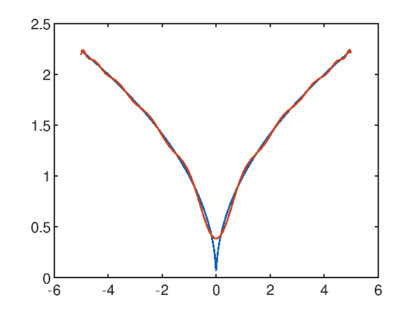

Polynomial regression with Accord.NET
This post shows a use of the PolynomialRegression class of the Accord.NET framework with the aim to demonstrate
that the classic polynomial approximation of machine learning can reach interesting levels of accuracy with extremely short learning times.
Although MLP (Multi Layer Perceptron) neural networks can be considered universal function approximators (see Fitting with highly configurable multi layer perceptrons on this website),
for some types of datasets, a classic machine learning regression supervised algorithm, such as the polynomial regression algorithm we are talking about here,
can reach acceptable levels of accuracy and with a significantly lower computational cost than that of an MLP.
To learn more about the approximation of a real function of a variable with an MLP see One-variable real-valued function fitting with TensorFlow and One-variable real-valued function fitting with PyTorch.
In the real world datasets pre-exist the learning phase, in fact they are obtained by extracting data from production databases or Excel files,
from the output of measurement instruments, from data-loggers connected to electronic sensors and so on, and then used for the following learning phases;
but since the focus here is the polynomial approximation itself and not the approximation of a real phenomenon, the datasets used in this post will be generated synthetically:
this has the advantage of being able to stress the algorithm and see for which types of datasets the algorithm has acceptable accuracy and for which the algorithm is struggling.
Implementation
The code described by this post is written with C#, it requires Microsoft .NET Core 3.1 and the Accord.NET 3.8.0 framework.
To get the code please see the paragraph Download of the complete code at the end of this post.
The most important class of the project is PolynomialLeastSquares1to1Regressor that is a wrapper of the
PolynomialRegression class of Accord.NET.
using System.Globalization;
using System.Collections.Generic;
using System.Linq;
using Accord.Statistics.Models.Regression.Linear;
using Accord.Math.Optimization.Losses;
using Regressors.Entities;
using Regressors.Exceptions;
namespace Regressors.Wrappers
{
public class PolynomialLeastSquares1to1Regressor
{
private int _degree;
private bool _isRobust;
private PolynomialRegression _polynomialRegression;
public PolynomialLeastSquares1to1Regressor(int degree, bool isRobust = false)
{
_degree = degree;
_isRobust = isRobust;
}
public double[] Weights
{
get
{
AssertAlreadyLearned();
return _polynomialRegression.Weights;
}
}
public double Intercept
{
get
{
AssertAlreadyLearned();
return _polynomialRegression.Intercept;
}
}
private void AssertAlreadyLearned()
{
if (_polynomialRegression == null)
throw new NotTrainedException();
}
public string StringfyLearnedPolynomial(string format = "e")
{
if (_polynomialRegression == null)
return string.Empty;
return _polynomialRegression.ToString(format, CultureInfo.InvariantCulture);
}
public void Learn(IList<XtoY> dsLearn)
{
double [] inputs = dsLearn.Select(i => i.X).ToArray();
double [] outputs = dsLearn.Select(i => i.Y).ToArray();
var pls = new PolynomialLeastSquares() { Degree = _degree, IsRobust = _isRobust };
_polynomialRegression = pls.Learn(inputs, outputs);
}
public IEnumerable<XtoY> Predict(IEnumerable<double> xvalues)
{
AssertAlreadyLearned();
double []xvaluesArray = xvalues.ToArray();
double [] yvaluesArray = _polynomialRegression.Transform(xvaluesArray);
for(int i = 0; i < xvaluesArray.Length; ++i)
{
yield return new XtoY() {X = xvaluesArray[i], Y = yvaluesArray[i]};
}
}
public static double ComputeError(IEnumerable<XtoY> ds, IEnumerable<XtoY> predicted)
{
double [] outputs = ds.Select(i => i.Y).ToArray();
double [] preds = predicted.Select(i => i.Y).ToArray();
double error = new SquareLoss(outputs).Loss(preds);
return error;
}
}
}
Code execution
On a Linux, Mac or Windows system where .NET Core 3.1 and git client are already installed, to download the source and run the program, run the following commands:
git clone https://github.com/ettoremessina/accord-net-experiments
cd accord-net-experiments/Prototypes/CSharp/Regressors
dotnet build
dotnet rundotnet runout folder nine folders are created, each corresponding to a built-in test case (see PolynomialLeastSquares1to1RegressorTesterclass);
each folder contains four files:
learnds.csv which is the learning dataset in csv format with header.testds.csv which is the test dataset in csv format with header.prediction.csv which is the prediction file in csv format with header.plotgraph.m for Octave.The file
prediction.csv is obtained by applying the $x$ of the test dataset to the regressor who learned the curve;
Note that the discretization step of the test dataset is not a multiple of the learning one to ensure that the test dataset contains most of the data not present in the learning dataset,
which makes the prediction more interesting.The script
plotgraph.m, if runned on Octave, produces a graph with two curves: the blue one is the test dataset, the red one is the prediction;
the graphs shown below were generated by running these scripts. Alternatively you can import csv files into Excel or other spreadsheet software
and generate charts by them; finally you can always use online services for plotting charts from csv files.The output of the program produces one output block for each of the nine build-in test cases; In particular, each block shows the polynomial it approximates and the mean square error calculated on the test dataset. Here is an example of the first output block:
Started test #PLSR_01
Generating learning dataset
Generating test dataset
Training
Learned polynomial y(x) = 5.000000e-001x^3 + -2.000000e+000x^2 + -3.000000e+000x^1 + -1.000000e+000
Predicting
Error: 9.42921358148529E-24
Saving
Terminated test #PLSR_01
Case study of polynomial approximation of a sinusoid
Given the synthetic dataset generated with a sinusoid $f(x)=\sin x$ within the interval $[-2 \pi, 2 \pi]$, the first attempt at approximation is made by attempting a third-degree polynomial; from this chart:

p(x) = -6.938440e-003x^3 + -1.123961e-004x^2 + 8.852045e-002x^1 + 8.879541e-004
it is clear that the desired result is far from the desired one and has an average square error of 0.35855442002271176.
By reasoning empirically (attention: this reasoning is not applicable in general), observing that the function to approximate has 2 relative minima and 2 relative maxima in the range considered,
that is 5 traits in opposite direction of growth, it is observed that at least one polynomial of grade 5 is needed to realize these 5 traits in opposite direction of growth.
In fact, trying to approximate with a fifth-degree polynomial things are starting to get better:
p(x) = 1.481271e-003x^5 + 8.653159e-006x^4 + -7.195156e-002x^3 + -2.278718e-004x^2 + 6.388252e-001x^1 + 6.429388e-004
and in fact the mean square error is 0.047802033570042826.
Raising the degree of the polynomial to 10, you can see that it is interestingly close to a very accurate approximation:
p(x) = 3.600998e-010x^10 + 1.030748e-006x^9 + -3.048007e-008x^8 + -1.432993e-004x^7 + 8.871355e-007x^6 + 7.507463e-003x^5 + -1.030648e-005x^4 + -1.614928e-001x^3 + 4.071080e-005x^2 + 9.908745e-001x^1 + -2.473974e-005
and in fact the mean square error drops to a very low value of 1.730499971068361E-05.
Case study of polynomial approximation of a function with a cusp
Give the synthetic dataset generated with the following function $f(x)=\sqrt{|x|}$ within the interval $[-5, 5]$, which has a cusp in the origin; Polynomial regression has difficulty approximating the cusp as can be seen from the following graph showing a tenth degree polynomial that attempts to approximate the objective function:
p(x) = 3.937716e-006x^10 + -2.624859e-018x^9 + -2.677173e-004x^8 + 1.265696e-016x^7 + 6.737778e-003x^6 + -1.993373e-015x^5 + -7.799737e-002x^4 + 1.137932e-014x^3 + 4.557707e-001x^2 + -1.714000e-014x^1 + 5.263100e-001
and evidently it is observed that around the cusp the approximation is not successful; on the whole interval the mean quadratic error is however interesting and is worth 0.004819185301219476.
Even trying a grade 20 polynomial:

p(x) = -1.484256e-010x^20 + 2.182564e-019x^19 + 1.919608e-008x^18 + -2.385482e-017x^17 + -1.064756e-006x^16 + 1.092940e-015x^15 + 3.310069e-005x^14 + -2.724916e-014x^13 + -6.325746e-004x^12 + 4.014962e-013x^11 + 7.671207e-003x^10 + -3.552878e-012x^9 + -5.887499e-002x^8 + 1.833481e-011x^7 + 2.773153e-001x^6 + -5.082524e-011x^5 + -7.577731e-001x^4 + 6.342430e-011x^3 + 1.180241e+000x^2 + -2.295607e-011x^1 + 3.844349e-00
the approximation around the cusp is improved but it is not possible to solve it; over the whole interval the mean square error is however considerably low and is worth 0.0014078917181083847.
Case study of the approximation of an exponential trait
Even if the exponential function is not approximable with a polynomial, contrary to what one might think, on a limited stretch the approximation reaches a great level of accuracy. Given the exponential function $f(x)=e^x$ within the interval $[-5, 5]$, Polynomial regression with a fifth degree polynomial is already acceptable, with a mean square error of 0.9961909800481012, as the graph shows:

p(x) = 2.069063e-002x^5 + 1.196676e-001x^4 + 7.493153e-003x^3 + -2.482972e-001x^2 + 1.470547e+000x^1 + 1.955036e+000
Using a tenth degree polynomial, the approximation becomes very accurate, with a mean square error of 1.6342296507040001E-06:

p(x) = 4.697166e-007x^10 + 4.930956e-006x^9 + 1.916581e-005x^8 + 1.422306e-004x^7 + 1.460971e-003x^6 + 8.937498e-003x^5 + 4.125903e-002x^4 + 1.640806e-001x^3 + 5.008296e-001x^2 + 1.003040e+000x^1 + 9.997306e-001
A difficult case study: the dampened sinusoid
The function $f(x)=\frac{\sin 2x}{e^\frac{x}{5}}$, which is a kind of dampened sinusoid, within the interval $[-20, 20]$ does not seem easy to approximate because of the many local minima and maxima present; for the above we immediately try to approximate with a high degree polynomial, for example a twentieth degree; from the following graph:

p(x) = 2.438374e-021x^20 + -1.303248e-019x^19 + -2.737692e-018x^18 + 2.182637e-016x^17 + 6.129847e-016x^16 + -1.513625e-013x^15 + 4.547323e-013x^14 + 5.628751e-011x^13 + -3.185157e-010x^12 + -1.215171e-008x^11 + 8.477405e-008x^10 + 1.541180e-006x^9 + -1.160371e-005x^8 + -1.108299e-004x^7 + 8.318767e-004x^6 + 4.124021e-003x^5 + -2.845069e-002x^4 + -6.550661e-002x^3 + 3.595534e-001x^2 + 2.775935e-001x^1 + -7.192461e-001
note that grade 20 is not sufficient, and the mean square error is high and equal to 29.906606603488548.
Using a fortieth degree polynomial, the approximation becomes very accurate, with a significantly lower mean square error of 0.03318409290980062:

p(x) = 2.620011e-041x^40 + -2.261159e-040x^39 + -1.064515e-037x^38 + 9.291263e-037x^37 + 2.000472e-034x^36 + -1.767156e-033x^35 + -2.306009e-031x^34 + 2.063269e-030x^33 + 1.823227e-028x^32 + -1.653595e-027x^31 + -1.047264e-025x^30 + 9.635843e-025x^29 + 4.515541e-023x^28 + -4.218466e-022x^27 + -1.489064e-020x^26 + 1.413717e-019x^25 + 3.790980e-018x^24 + -3.661427e-017x^23 + -7.468664e-016x^22 + 7.347405e-015x^21 + 1.134298e-013x^20 + -1.138497e-012x^19 + -1.314822e-011x^18 + 1.349687e-010x^17 + 1.143662e-009x^16 + -1.205220e-008x^15 + -7.274557e-008x^14 + 7.920025e-007x^13 + 3.256202e-006x^12 + -3.704228e-005x^11 + -9.671991e-005x^10 + 1.175149e-003x^9 + 1.729315e-003x^8 + -2.354541e-002x^7 + -1.527679e-002x^6 + 2.660934e-001x^5 + 3.057082e-002x^4 + -1.386296e+000x^3 + 1.984571e-001x^2 + 2.097913e+000x^1 + -2.557841e-001
Download of the complete code
The complete code is available at GitHub.
These materials are distributed under MIT license; feel free to use, share, fork and adapt these materials as you see fit.
Also please feel free to submit pull-requests and bug-reports to this GitHub repository or contact me on my social media channels available on the top right corner of this page.